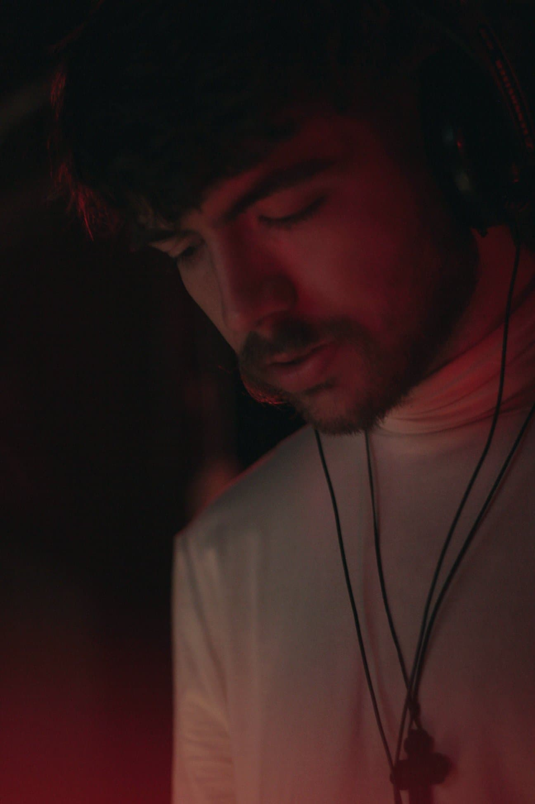
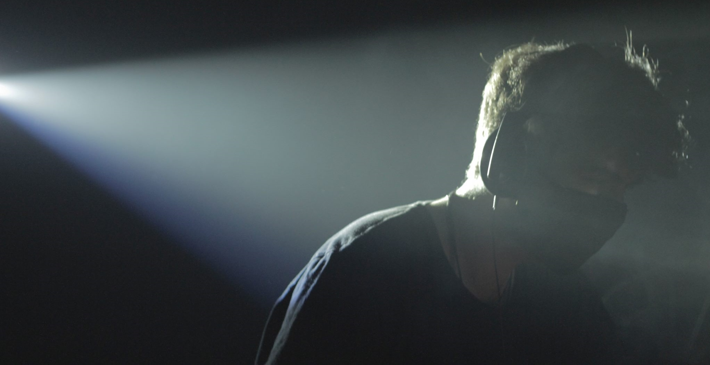
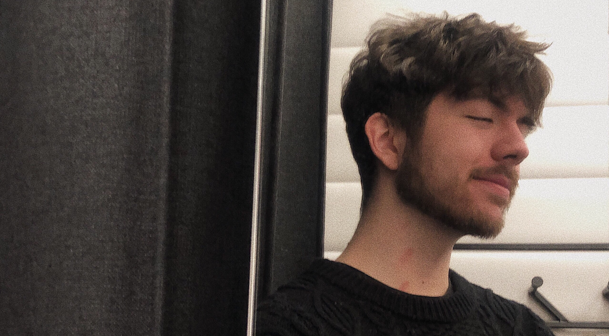

Luzkan

Od młodości towarzyszy mu kreatywność, o czym daje znać do dziś przekuwając ją na kąski kultury i pragmatyki - przygotowane do odbioru przez społeczność. Wraz z wiekiem bagaż umiejętności, a co za tym idzie, serwowany repertuar stale się powiększa. Zaczynając w wieku 7 lat od programu na komórce do montażu filmów, przez profesjonalne oprogramowanie filmowe, koncept grafikę, solucje problemów technicznych, aż po programowanie (m.in aplikacji mobilnych, czy też stron WWW). Przy tym wszystkim zawsze była obecna muzyka, która pociągnęła za sobą taniec, a później popchnęła go w całą scenę muzyki.
Właśnie w tej strefie "wizualnego" odbioru obecnie przebywa, szerząc elektroniczny pogłos w Polskim świecie undergroundowej muzyki. Bardzo szybko przekonał miejscową publikę i profesjonalistów, co zapewniło mu miejsce w kolektywie Esencji Hardcoru. Szum szerzy nie tylko na scenie, ale także poprzez produkcję własnych utworów w lżejszych klimatach z mocną posypką mocniejszej strony. Sprawdźcie tutaj jego porywającą robotę.
Już od siebie dodam pare ciekawostek. Uwielbiam losowość i minimializm, ale żeby wszystkiemu było na przekór, to układam to w osobliwej harmonii. Uważam, że żyjemy w kulturze remixu. Kwestia polega tylko na tym, czym doprawisz swoją rzeczywitość.
marcel.psycheList.add("adhd");
while (marcel.isAlive() || !marcel.isSleeping()) {
losulosu = rand()*100000 + 1;
marcel.thinkAbout(losulosu);
if(marcel.mood => 90.0)
doTalk(losulosu);
}
Muzyka

Od lata 2018 aktywnie działa jako DJ na Wrocławskiej scenie muzyki techno rozrzucając w selektach głównie gatunki hardtrance i hardstyle, ale jego ksywa wcale nie definiuje tego co będzie grane, gdyż również poza hardcorem na parkiecie usłyszeć można eksperymentalne tracki ze wszystkich gatunków muzycznych.
Zimą tej samej daty - członek Esencji Hardcoru, a za następne pół roku - jako producent wypuścił pierwszą poważną propozycję: EP "Psychotic Inconvenience".
W ponad 10 miejscach (m.in. we Wrocławiu, czy Katowicach), w różnych inicjatywach (np.: Zajezdnia, Hakkeny), prospołecznie charytatywnie (Hardcore Puppies, SafeRave, Piesapol)
Utwory
Projekty i informacje

Design / IT
Marcel: Nie ukrywając, kod, który bezpośrednio wpływa na wrażenia percepcji jest tym w czym czuję się najlepiej. Mogę się pochwalić moim małym osiągnięciem było zrobienie najszybszego programu do symulacji zmieniających się pikseli, przez podniesienie rozwiązania w okolicach pudełka, zamiast prosto z niego, ale jednak wszystko co widać i zapewnia wrażenia, to jest to co lubię najbardziej.
Z tego powodu, z samej dziedziny informatyki, najbardziej podoba mi się mój "nocny" styl do YouTube'a - zaskarbił sobie pozycję na monitorze innych ludzi podczas używania jednego z najpopularniejszych serwisów na świecie. Strona internetowa, która wykonałem będzie zaraz za tym ciemnym CSS'em, ponieważ to ona praktycznie samodzielnie nauczyła mnie bardzo wielu aspektów HTML/CSS.
Filmy / Entertainment
- Blisko 10 lat od produkcji pierwszego wideo
- Zgromadzone ponad 4 mln wyświetleń i 140.000+ godzin watchtime'u
Kontakt